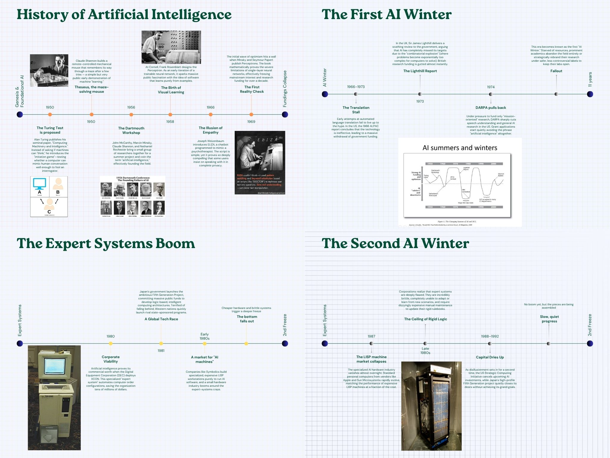
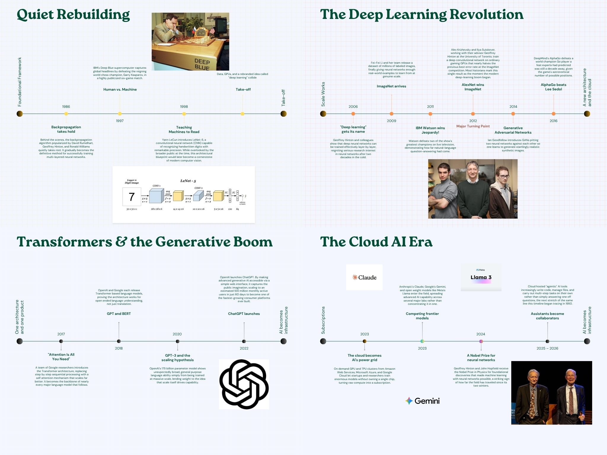
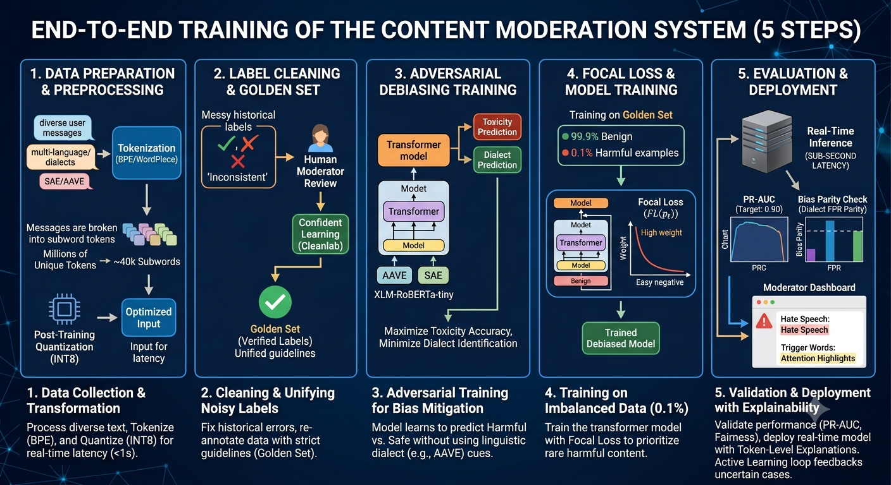

Artifacts
To create a structured, visually engaging research presentation that maps the full arc of AI development — covering foundational theory, key breakthroughs, landmark applications, and the emergence of modern generative AI — usable by both technical and non-technical audiences.
- Define five eras of AI development: Foundations (1950–1969), Knowledge Systems (1970–1989), AI Winter & Revival (1990–2009), Deep Learning Era (2010–2019), and the Generative AI Age (2020–present).
- Researched milestone events per era using academic sources, IEEE publications, and verified AI history timelines. Used Claude AI to validate and cross-reference key dates and attribution.
- Identified 20+ landmark achievements including the Turing Test (1950), Perceptron (1958), Expert Systems (1970s), IBM Deep Blue (1997), ImageNet & AlexNet (2012), GPT-3 (2020), and ChatGPT (2022).
- Structured the presentation with a visual timeline, era-by-era breakdowns, "why it mattered" commentary for each milestone, and a forward-looking section on AI's trajectory.
- Designed slides with consistent visual language: era color-coding, quote callouts from key AI figures, and a visual "AI Impact Wheel" showing sectors transformed by AI.
AI progress has not been linear — the field experienced two major "winters" driven by overinflated expectations. Each revival was triggered not by theory alone, but by increases in compute power and data availability. The 2017 Transformer architecture paper ("Attention Is All You Need") proved to be the single most consequential technical contribution to modern AI.


This presentation compresses 70+ years of AI history into a single 20-minute briefing, saving leadership teams an estimated 10–15 hours of independent research when building internal AI literacy programs — and providing a defensible, source-backed narrative for AI strategy discussions.
To evaluate the shifting dynamics of the Las Vegas residential housing market, parse complex socioeconomic data down to high-impact variables affecting buyer purchasing power, and provide an actionable, forward-looking framework for strategic planning.
- Established a 2026 operational baseline using verified historical data from Las Vegas REALTORS® (LVR) and Freddie Mac, confirming a median single-family home price of $490,000 against a 6.50% 30-year fixed mortgage rate.
- Modeled 2027 market projections by correlating macroeconomic variables, factoring in Clark County's net migration of ~42,000 residents annually against a tightening inventory supply projected to drop below 3 months. Using Gemini.
- Contextualized historic-high valuations by analyzing the structural reset of the 2020–2022 pandemic boom, demonstrating how a 50% price spike established a permanent floor under local housing inventory.
- Mapped geographic submarket divergence across the valley, contrasting hyper-competitive seller markets (Summerlin and Henderson) with affordable starter-home valves (North Las Vegas).
- Formatted into an accessible strategic brief complete with executive findings, core data matrices, localized leverage windows, and balanced advice for navigating the market without anticipating a 2008-style crash.
Using AI analysis Studied that: Subsequent interest rate hikes successfully compressed sales volume but completely failed to drop home values because pandemic-era migration patterns anchored local inventory floors. As interest rates dip toward the low 6% range in 2027, expanded purchasing power will pull buyers back into the market—absorbing listings faster than new inventory can arrive and driving home prices up to a projected $500,000–$510,000+.

The Las Vegas Residential Real Estate Market Report equips buyers and strategic planners with a clear-eyed predictive framework that highlights a temporary 2026 buyer leverage window—allowing stakeholders to capitalize on seller flexibility before dropping 2027 interest rates reignite intense marketplace competition.
To compare simple machine learning and deep learning approaches through real-world applications, and to determine which approach is best suited to a given problem based on data structure, feature complexity, and computing requirements.
A real-world application of simple machine learning is Gmail's spam filter. Gmail looks at signals like sender reputation, IP address, domain history, and user actions (such as marking an email as spam) to sort incoming mail into the inbox or spam folder. Because these features — like sender address, subject line patterns, and known spam keywords — are well defined and limited in number, a simpler model like logistic regression or a decision tree works well here. In fact, research shows that most real-world spam filters still lean on lighter, well-established algorithms such as Naïve Bayes rather than deep neural networks, since these simpler models can already reach accuracy rates above 99%.
A machine learning approach is well suited for spam detection because the problem relies on a fairly small, well-defined set of features that can be identified ahead of time. Since these features are already structured and labeled data (spam vs. not spam) is easy to collect, a simpler model can learn the patterns efficiently without needing extra computing power. This makes machine learning a practical, lightweight solution that's easy to train, fast to run, and accurate enough for the task at hand.
A deep learning approach wouldn't be the right fit for this task. Deep learning is built to find hidden patterns in messy, unstructured data, like images or full sentences, where the important features aren't already known ahead of time. Since spam detection already works with a clear, structured set of features, adding a deep learning model would mean more computing power and complexity without a meaningful improvement in results.
A strong real-world example of deep learning is Apple's Face ID. It uses a convolutional neural network (CNN) paired with a TrueDepth camera system to build a detailed depth map of a person's face and compare it against a stored facial profile. The system was trained on over a billion images so it could learn facial patterns directly from raw visual data, without a person having to manually define what counts as an "eye" or "nose."
This is a case where deep learning is necessary. Faces vary constantly, in lighting, angle, expression, and small changes over time, and a CNN can automatically detect these deep, layered patterns in pixel data. A simple machine learning model wouldn't work well here because it depends on predefined features, and manually describing every version of a human face would be nearly impossible.

This case study provides a clear, side-by-side decision framework for choosing between machine learning and deep learning based on data structure and problem complexity — helping teams avoid over-engineering simple problems while correctly applying deep learning where it's actually needed.
To catalog the core families of deep learning architectures, classify them as supervised or unsupervised, and connect that theory to the actual training approaches behind the three most widely used AI assistants — clarifying where each model sits on the supervised/unsupervised spectrum and what makes each one distinct.
- Convolutional Neural Network (CNN) — Supervised. Learns visual patterns through layers of convolution and pooling. Example: Face ID / image recognition.
- Recurrent Neural Network (RNN), including LSTM & GRU — Supervised. Feeds prior outputs back into the network to retain memory of sequence data. Example: speech recognition.
- Self-Organizing Map (SOM) — Unsupervised. Clusters unlabeled input using competing nodes. Example: dimensionality reduction & clustering.
- Autoencoders (AE) — Unsupervised. Compresses input to a smaller code, then reconstructs it. Example: image compression.
- Restricted Boltzmann Machine (RBM) — Unsupervised. A two-layer probabilistic network that reconstructs input. Example: collaborative filtering.
1. The Initial Training (Unsupervised). When these models are first built, they read massive amounts of internet text, books, and code with no labels attached, learning only by trying to predict the next word. This is unsupervised learning — the model is finding patterns on its own.
2. The Guidance Phase (Supervised). "Guiding" a model's behavior after pretraining — through fine-tuning or RLHF — is supervised learning:
- Fine-tuning: humans write example-correct answers, and the model learns to mimic them, like a student studying an answer key.
- RLHF (Reinforcement Learning from Human Feedback): humans grade the model's answers (good vs. bad), and the model learns to maximize "good" grades. This is still supervised, because a human is providing the correct feedback signal.
In short: these models learn knowledge through unsupervised learning, but they learn manners and behavior through supervised learning.
Architecture notes: ChatGPT and Gemini are both built on the Transformer architecture. Gemini is designed as a multimodal model from the ground up — it takes in text, images, audio, and video together through the same neural network, rather than gluing separate systems together, which is a step beyond a standard text-first Transformer. Claude, from Anthropic, also runs on a Transformer "engine," but the distinguishing factor is Constitutional AI — instead of relying only on human-ranked feedback, the model is trained against a written set of principles and checks its own outputs against that "constitution" during training. So while the engine is similar across all three, Claude's "driver's training" is what sets it apart.


This artifact turns dense ML architecture theory into a practical decision map — showing that three products built on the same Transformer "engine" still behave differently because their post-training method (RLHF vs. Constitutional AI) shapes tone, safety behavior, and reliability. That distinction is directly useful when choosing the right AI tool for engineering decision-support work, rather than treating "AI" as one interchangeable thing.
The primary objective of this case study is to design a real-time, end-to-end machine learning architecture for enterprise content moderation that effectively detects harassment, hate speech, and threats while overcoming critical data challenges. Specifically, the system is engineered to navigate high-dimensional text at sub-second latency, extreme class imbalance, and noisy historical labels, all without compromising strict user privacy regulations. Ultimately, this design demonstrates that catching harmful content at scale and protecting non-standard-dialect speakers from over-censorship are not competing goals. By integrating techniques like adversarial debiasing to mitigate AAVE bias, confident learning for label correction, and ephemeral caching for privacy-compliant explainability, the architecture translates abstract ML challenges into a concrete, deployable pipeline that continuously adapts to evolving threats.
Data challenge framework adapted from an outline of the fourteen core ML data challenges (availability, quality, labeling, privacy, bias, imbalance, scalability, versioning, integration, drift, annotation cost, real-time processing, interoperability, and annotation quality), and from "Data Quality Issues That Kill Your Machine Learning Models," Towards Data Science, https://towardsdatascience.com/data-quality-issues-that-kill-your-machine-learning-models-961591340b40/.

This case study demonstrates how to translate abstract ML data challenges into a concrete, deployable system architecture — showing that catching harmful content at scale and protecting non-standard-dialect speakers from over-censorship are not competing goals, but two outcomes of the same disciplined data and modeling practice.